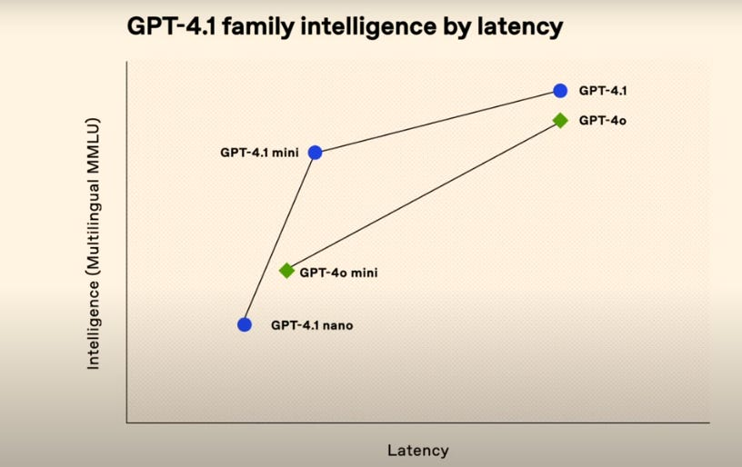

To give us some context behind the graph, I’d like to give you knowledge of what the actual differences in quality are between GPT 4.o and 4.1 by asking GPT 4.1 itself. After all, who knows why they’re better best than the LLM itself! (Note: here’s a link regarding the GPT differences for more info: https://openai.com/index/gpt-4-1/)
USER
what is the difference between gpt 4.1 and gpt 4.o?
ASSISTANT
GPT-4.1 is an update to GPT-4.0, and while OpenAI hasn’t published a comprehensive technical changelog, several differences and improvements have been observed or highlighted by the company and users. Here’s a summary:
1. Performance and Capabilities
- GPT-4.1 demonstrates improved reasoning, accuracy, and reliability compared to GPT-4.0, particularly with mathematical tasks, following complicated instructions, and reducing hallucinations (incorrect or made-up answers).
- It is better at handling longer context windows (keeping track of more conversation/history at once).
- It can solve more multi-step problems without losing track of the question.
2. Speed and Efficiency
- GPT-4.1 is generally faster and feels more responsive, both for text responses and when generating code or other outputs.
3. Error Reduction
- There is a notable reduction in simple mistakes and “off-topic” responses.
- GPT-4.1 is less likely to refuse harmless requests or misunderstand nuanced prompts.
4. Multimodality
- GPT-4.1 is optimized to be more effective at “multimodal” tasks (handling both text and image input/output), depending on the interface (such as ChatGPT Plus). GPT-4.0 already supported some multimodal tasks, but GPT-4.1 improves consistency and quality.
5. Function Calling & Integrations
- There are improvements in how GPT-4.1 interacts with external tools (such as using APIs, calling functions, or connecting with plugins). This means better reliability and accuracy when executing code or retrieving external results.
6. Training Data
- While both models were trained on vast quantities of internet data, GPT-4.1’s training likely incorporates more recent information and improved data curation, making it less likely to output outdated or incorrect context.
7. Subtle Differences
- Some users report that GPT-4.1 can sound more conversational and natural, with better adherence to tone and style requests.
In summary:
GPT-4.1 is not an entirely new architecture, but an incremental, meaningful improvement upon GPT-4.0, with better reasoning, speed, reliability, tool use, and multimodal capabilities.
If you’re using ChatGPT Plus (as of June 2024), you get access to these improvements by default via the GPT-4o model, which is the deployment of the latest GPT-4 series advancements (including GPT-4.1 capabilities).
References: - OpenAI Announcing GPT-4o (blog) - OpenAI Community Updates - User and developer feedback from the OpenAI forums and API documentation.
Let me know if you’d like a side-by-side comparison or more technical detail!
Now that we have a concept of GPT 4.1’s supposed superiority, let’s see how well they fare in properly solving a simple and complex problem in python. Let’s get to it!
Beginning prompting for GPT 4.1
You are in a competition to